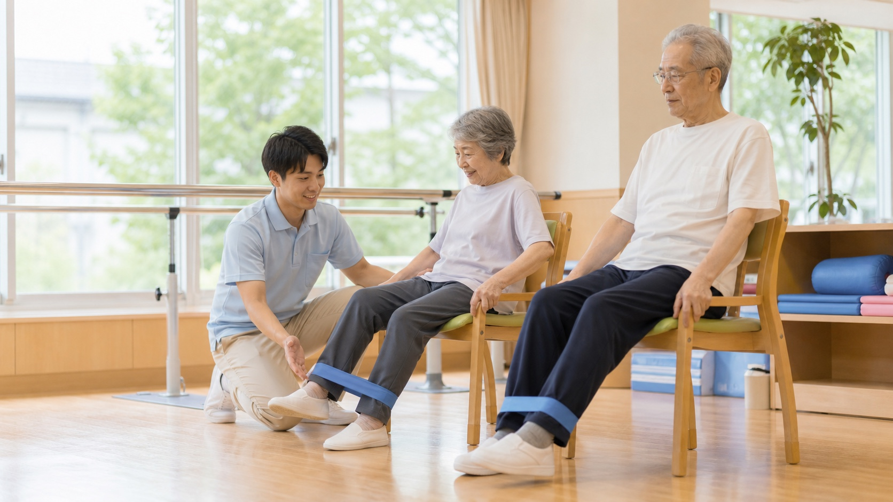
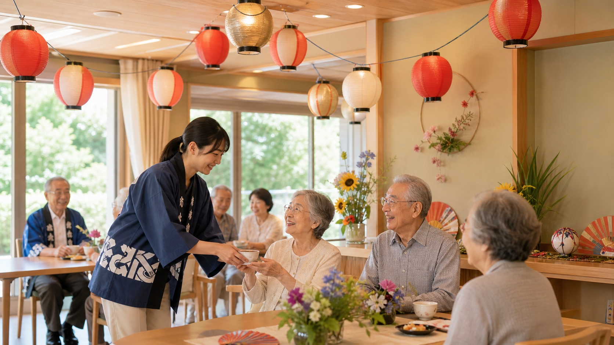
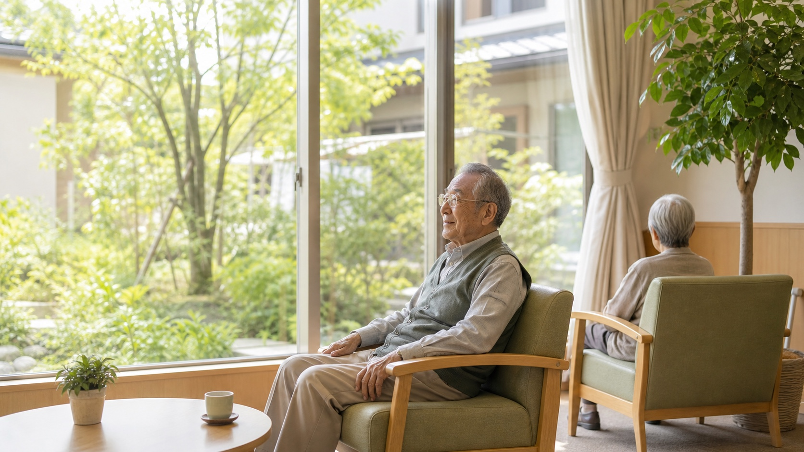

A DAY
ある一日の流れ
無理のないリズムで、おだやかに一日を過ごしていただけます。
（体調やご希望にあわせて、お一人おひとりのペースを大切にしています。）
7:00 起床・朝のしたく
おはようございます
スタッフがお手伝いしながら、洗顔や着替えなど朝のしたくを整えます。気持ちのよい一日の始まりです。
8:00 朝食
栄養たっぷりの朝ごはん
管理栄養士が考えた、体にやさしいお食事。お一人おひとりの状態にあわせた形態でご用意します。
10:00 入浴・体操
さっぱり・いきいき
ゆったりとした入浴や、無理のない体操で体を動かします。健康チェックも欠かしません。
12:00 昼食・休息
みんなで囲む食卓
食堂でゆっくりお食事を楽しんだあとは、お昼寝やくつろぎの時間を過ごします。
14:00 レクリエーション・交流
笑顔が生まれる時間
手芸や歌、季節の行事、おやつの時間など。ほかの方やスタッフとのふれあいを楽しみます。
18:00 夕食・くつろぎ
一日の終わりに
夕食のあとはテレビを見たり、おしゃべりしたり。それぞれのペースでゆったり過ごし、就寝します。
DAILY CARE
毎日の暮らしを支えるもの

食事
季節の食材を取り入れ、彩りと栄養を大切に。きざみ食やとろみ食など、状態にあわせて調整します。

入浴
一般浴のほか、機械浴など体の状態にあわせた設備をご用意。安全に、気持ちよくご入浴いただけます。

体操・機能訓練
機能訓練指導員のもと、無理のない運動で体の機能の維持を目指します。「できる」を増やします。

レクリエーション
歌や手芸、ゲーム、季節の行事など。楽しみながら心も体もいきいきと過ごせる時間です。

交流・行事
お花見や夏祭り、敬老会など季節の行事を開催。ご家族や地域の方との交流も大切にしています。

休息
活動だけでなく、ゆっくり休む時間も大切に。お一人おひとりのペースに寄り添います。